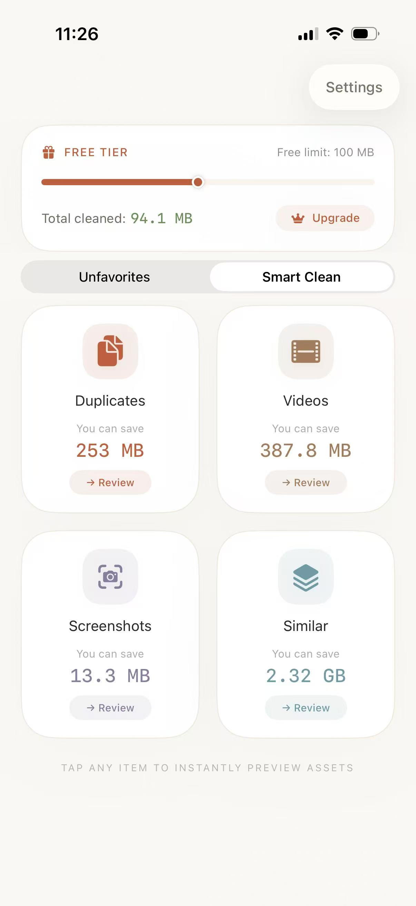
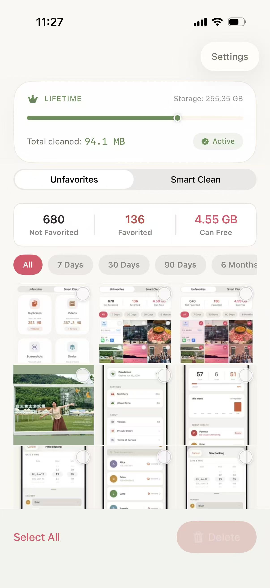

Dupes uses pHash perceptual hashing to find exact and near-duplicate photos, Vision framework to detect similar shots, and Laplacian variance to score blurry images. Every byte of analysis runs on your iPhone — zero cloud uploads, zero tracking.
Clean, intuitive design. Find what's wasting space in seconds.

Dashboard — storage overview at a glance

Results — grouped by category with smart picks
Settings — 100% private, lifetime access
Five detection engines — each powered by real algorithms, not AI hype — work together to surface everything you don't need.
Uses pHash (perceptual hashing) to fingerprint every photo. Groups duplicates where the Hamming distance is ≤ 10 — catching exact copies, resized versions, and lightly edited variants. Auto-recommends the best to keep.
Extracts Vision framework feature prints and calculates cosine similarity. Photos scoring ≥ 0.85 are grouped together — burst shots, multiple takes, same scene. Each pair shows a percentage match.
Scores every photo using Laplacian variance for sharpness. Filter by severity — blurry or very blurry. Each photo displays a blur score badge so you can preview before deleting.
Detects screenshots via PHAssetMediaSubtype.photoScreenshot and groups them by time period — Today, This Week, This Month, Older. Batch-select and clear the ones you don't need.
Lists all videos sorted by file size (largest first). Shows duration, resolution, and file size for each video. Built-in inline video player for preview before deletion.
Auto-recommends the best photo per group using a priority chain: highest resolution → largest file size → oldest timestamp. Batch select all non-recommended with one tap.
No setup. No account creation. No cloud sync. Just open, scan, and clean.
Tap Scan and Dupes runs all five detection engines on your entire photo library — duplicates, similar photos, blurry shots, screenshots, and large videos. Everything processes on-device using Swift Concurrency.
Browse results grouped by category. Tap any item to preview with full metadata — resolution, file size, date, blur score, or similarity percentage. Smart picks are pre-selected for you.
Choose your delete mode: Move to Recently Deleted (recoverable for 30 days), Delete Permanently (instant), or Ask Every Time (confirm each). Batch select or go one by one.
Compare Dupes to iOS built-in tools, manual cleanup, and generic photo cleaners.
| Feature | iOS Built-in | Generic Cleaners | Dupes |
|---|---|---|---|
| Exact duplicate detection | Partial | ✓ | ✓ pHash + Hamming distance |
| Near-duplicate detection | ✗ | Some | ✓ Perceptual hashing |
| Similar photo grouping | ✗ | ✗ | ✓ Vision framework |
| Blur detection | ✗ | ✗ | ✓ Laplacian variance |
| Screenshot cleanup | Manual only | ✗ | ✓ Auto-grouped |
| Large video finder | Manual only | ✗ | ✓ Sorted by size |
| 100% on-device processing | ✓ | ✗ Cloud required | ✓ Zero cloud |
| Subscription-free | ✓ | ✗ Monthly fees | ✓ One-time purchase |
| Free scan + free deletion | ✓ | Trial only | ✓ Free scan + 100 MB free |
| Smart auto-recommendations | ✗ | ✗ | ✓ Resolution → Size → Date |
Every scan, every analysis, every recommendation happens 100% on your iPhone. No cloud uploads. No third-party analytics SDKs. No tracking pixels. Built with Apple's Vision framework and Swift — nothing touches an external server.
Everything you need to know about Dupes.
Dupes uses pHash (perceptual hashing) to generate a fingerprint for each photo. Photos with a Hamming distance of 10 or less are considered duplicates. This catches exact copies, resized versions, and slightly edited variants. The best photo in each group is automatically recommended for keeping based on resolution, file size, and date taken.
Yes. Scanning your photo library is completely free — unlimited scans, no account required. You also get 100 MB of free deletion. For unlimited cleanup, there's a one-time lifetime purchase with no subscriptions or recurring fees.
No. All analysis — duplicate detection via pHash, similarity comparison via Vision framework, and blur scoring via Laplacian variance — happens 100% on your iPhone. No photos are uploaded to any server. No third-party analytics or tracking SDKs are included.
Dupes uses Apple's Vision framework to extract feature prints from each photo, then calculates cosine similarity between them. Photos with a similarity score of 0.85 or higher are grouped together. Each pair shows a percentage match so you can make an informed decision.
Yes. Dupes uses Laplacian variance to score the sharpness of each photo. You can filter by severity — blurry or very blurry. Each photo shows a blur score badge so you can preview before deciding to delete.
Dupes requires iOS 17 or later and works on both iPhone and iPad. It's built with SwiftUI, Apple's @Observable framework, and Swift Concurrency for optimal performance on modern devices.
Yes. Dupes fully supports iCloud Photos. It reads metadata from your library including screenshots, videos, and all photo types — whether they're stored locally on your device or synced via iCloud.
It depends on which delete mode you choose. Move to Recently Deleted puts photos in the system's Recently Deleted album where they stay for 30 days. Delete Permanently removes them immediately. Ask Every Time lets you decide per deletion. You can also use haptic feedback on all interactions for confidence.
Practical advice to get the most out of your iPhone storage.
Step-by-step guide to identifying and removing duplicate photos from your iPhone camera roll — using pHash perceptual hashing and manual methods.
Comprehensive guide to clearing storage on your iPhone — from duplicate photos to cache cleanup, Offload Unused Apps, and more.
Why iCloud sometimes creates duplicate photos and how to clean them up permanently — including the common causes.
Common causes and practical solutions to reclaim space — without losing your photos or memories.
Head-to-head comparison of iOS built-in, manual cleanup, and Dupes — which method wins?
5 proven methods to free up space while keeping every memory intact.
Find and remove the biggest space hogs in your camera roll — videos you forgot about.
Why your photo library keeps growing and how to stop it — burst mode, Live Photos, iCloud issues.
Automatically detect and remove blurry, out-of-focus shots using Laplacian variance scoring.